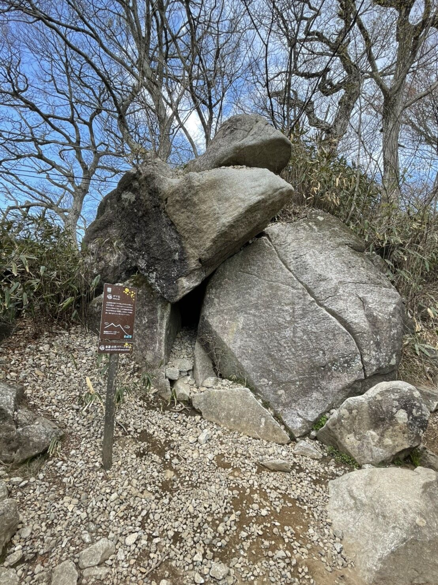
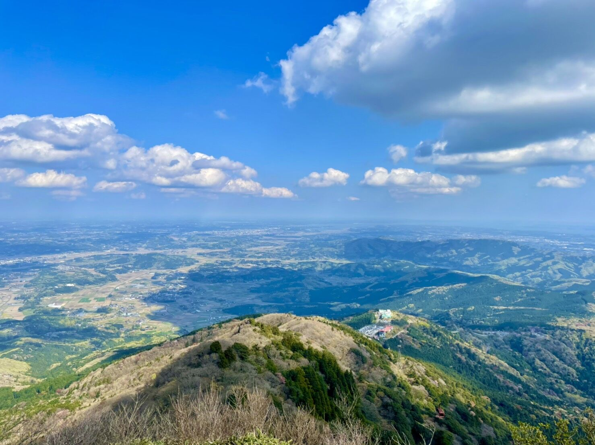
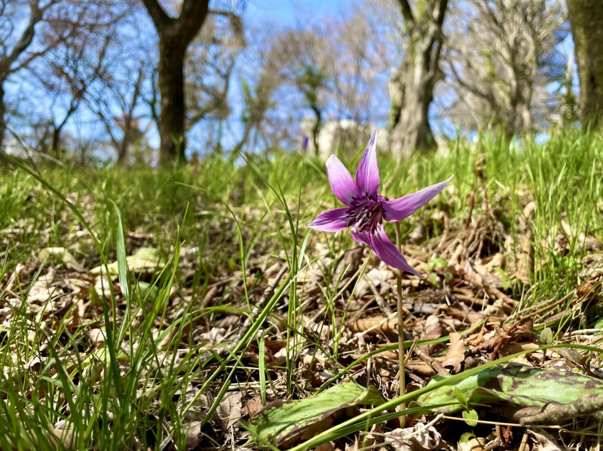

みなさんこんにちは！マスク狛犬です。
感染症対策はしっかり行ってますか？私はマスクをちゃんと着けていますよ。
(ま、私は吽形の方なので口はずっと閉じていますが...。)
おっと、これは失礼しました！
筑波山神社の狛犬がお出迎えしてくれましたね。
というわけで(?)、今回の記事は4月に行われた「待ちに待った新歓巡検！ in 筑波山」です！
日本百名山の一つに数えられる筑波山。そんなつくば市のシンボルでの巡検についてまとめました！
1. 筑波山の奇岩！伝説の"ガマ石"
山道を歩いていると、なんともまぁ奇妙な形の岩が...
まるで動物の頭のような形をしており、その下あご部分には何故か大量の石が積み重なっている...これはアヤシイ...。
というのも、これは筑波山名物の一つ"ガマ石"で、江戸時代に始まった「ガマの油売り」の口上もここが起源とされています。今ではパワースポットとして知られ、ガマ(→ガマガエル，二ホンヒキガエル)の口に石が入れば願いが叶うらしい！
筆者も「幸せな生活が送れますように」と漠然としたお祈りをしながら石を投げたところ、転がり落ちてしまいました...。残念。
2. 平野部を一望！絶景の山頂
一応ロープウェイに乗りましたが、登山慣れしていない筆者はもうくたくた...足が棒になりそうな感覚を味わいながら、なんとか山頂へ。
するとなんとも美しい景色が広がっているではありませんか！！！
天気が良かったこともあり、その圧巻の景色に思わず目を丸くしてしまいました...！
登山の魅力を存分に感じましたね...。
さすが"日本百名山"のひとつ！と言わんばかりの景色でした！
3. 薄紫の可愛い「春の妖精」 カタクリの花
筑波山には"カタクリ"という花が咲きます。そうです、あの"片栗"粉のカタクリです。
カタクリはこんな感じの花を咲かせます。薄紫の可愛らしい花ですね。
実はこの花、なんとたった2か月しか地上に顔を出さない、貴重な花なんです。
こういった早春に開花させ、その他の季節を地中で過ごす植物を総称して"スプリング・エフェメラル"、日本語では「春のはかない命」「春の妖精」と言います。
可愛らしい花ではありますが、生物の存続のための工夫を感じさせる植物でもあるんですね。
4. 最後に...
いかがでしたでしょうか？
筑波山に関するお話はもっとたくさんあるのですが、やはりこういった自然は現地に行ってその迫力を感じ取るのが一番！
ということで、みなさんも筑波山が持つ独特なオーラを感じてみては？？
最後までご覧いただき、ありがとうございました！